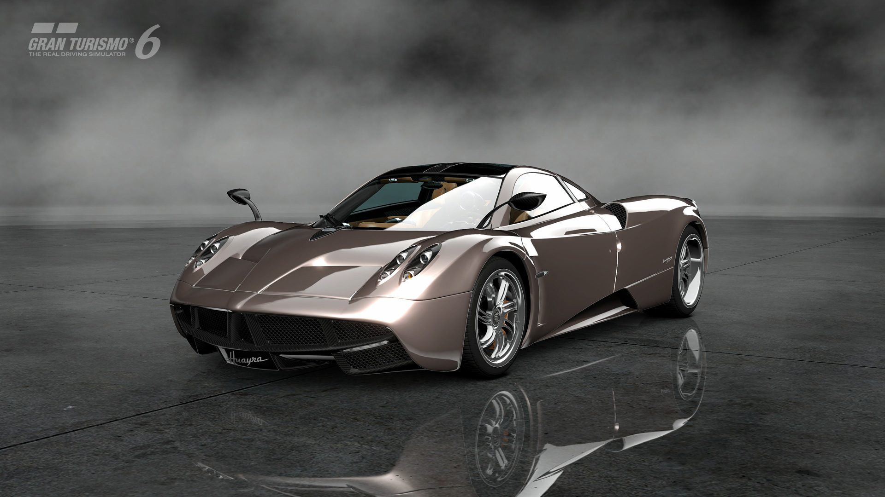
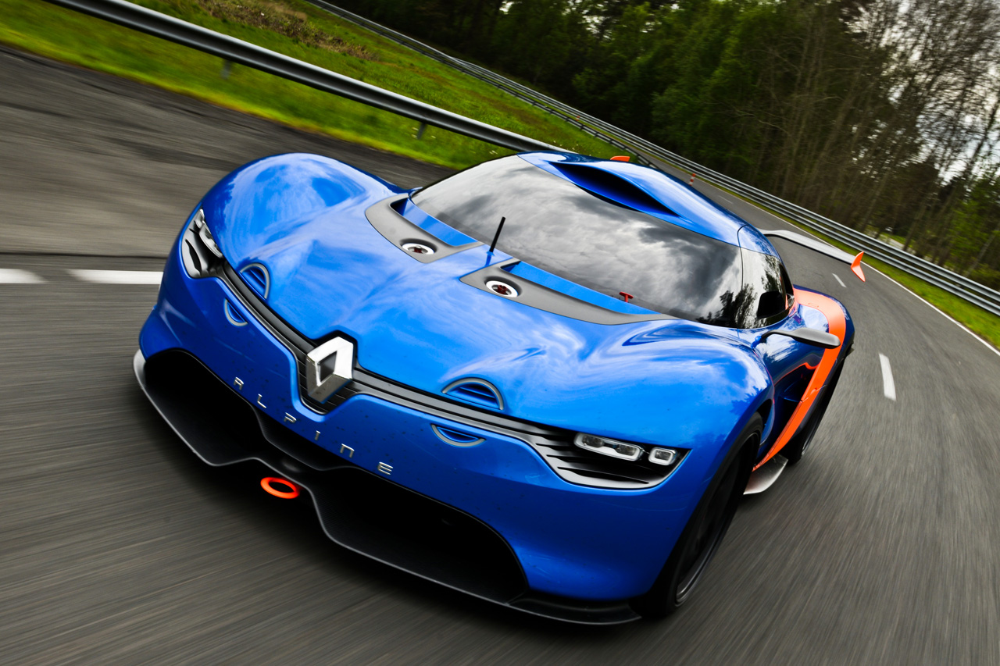
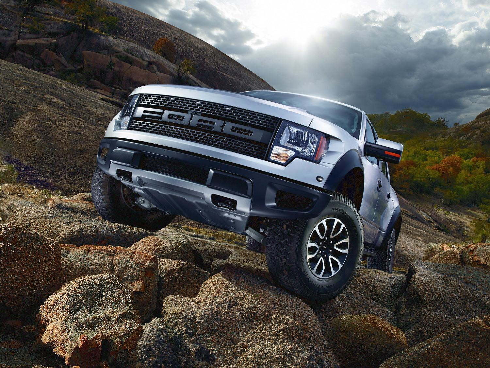
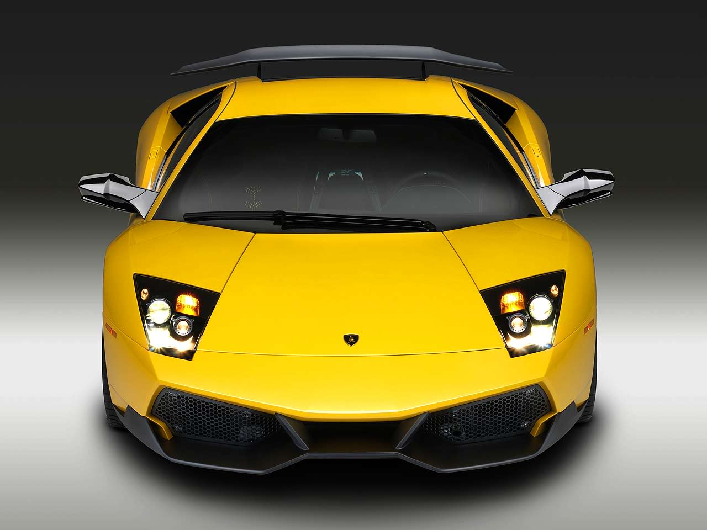
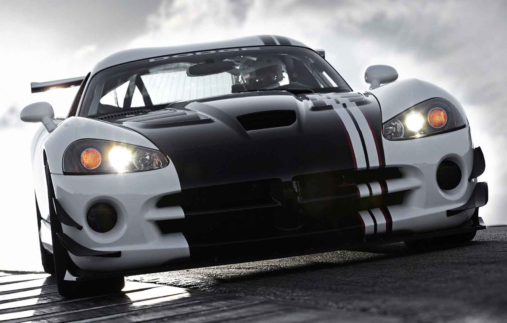
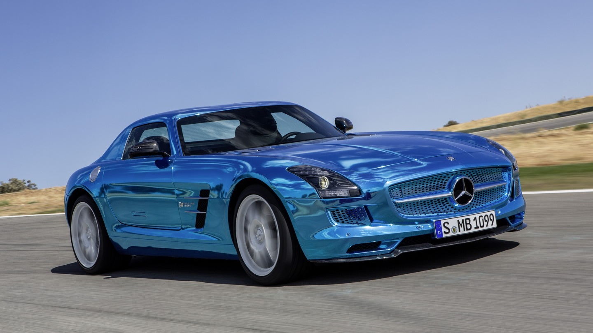
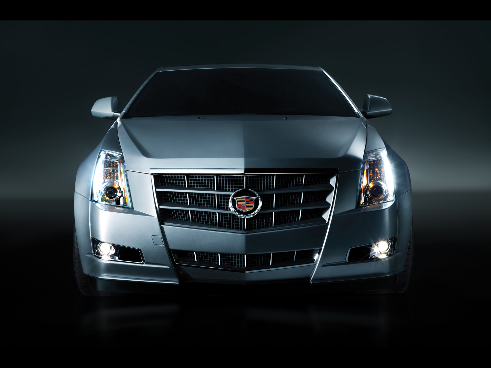

Autos Deportivos

Powered by Mentes Curiosas
Autos de Carreras

Powered by Mentes Curiosas
Autos Clasicos
Powered by Mentes Curiosas
Autos de Lujo

Powered by Mentes Curiosas
Lamborghini Aventador LP700-4
El Lamborghini Aventador LP700-4 es un automóvil súper deportivo de dos puertas y dos plazas, producido por el fabricante italiano Lamborghini en Sant'Agata Bolognese. Es un biplaza cupé de dos puertas conapertura de tijera, fue presentado en el Salón del Automóvil de Ginebra el 28 de febrero de 2011, cinco meses después de su presentación oficial en Sant'Agata Bolognese. Su código interno de desarrollo es LB834. El Aventador fue concebido para reemplazar al Murciélago, con 10 años a cuestas como el nuevo modelo tope de la gama de Lamborghini a partir de 2011. Poco tiempo después de la presentación al público del Aventador, Lamborghini anunció que había vendido más de 12 meses de su producción. Las entregas comenzaron en el segundo semestre de 2011. El precio sugerido es de 255.000 € en Europa, 201.900 £ en el Reino Unido y 379.700 $ en los Estados Unidos. En España, su precio es de 350.000 euros, impuestos incluidos.1
Powered by Mentes Curiosas
Pagani Huayra
El Pagani Huayra Se construye sobre dos semi-chasis, delantero y trasero, fabricados en cromo-molibdeno (con un peso final de 1350 kilogramos), que le brindan mayor resistencia, permitiendo ahorrar peso. El coche conserva las características líneas de su antecesor, el Pagani Zonda, pero más estilizado. Su motor es un Mercedes-Benz AMG, un 12 cilindros en V a 60º biturbo de 6 litros, capaz de proporcionarle 730 CV de potencia y 1000Nm de par. Su creador, Horacio Pagani, ha confesado que él hubiera preferido un motor atmosférico, pero que las duras restricciones medioambientales de la Unión Europea obligaron a pensar en otro tipo de soluciones que permitirán homologar el vehículo. La caja de cambios es de embrague único y 7 velocidades. Un sistema de doble embrague incrementaría el peso en 70kg echando por tierra la posible mejora en rendimiento. Dispone de componentes aerodinámicos activos: dos delante y dos detrás. Modifican la carga aerodinámica de forma automática para conseguir un paso por curva con el mayor apoyo posible. Debido a su peso, consigue acelerar de 0 a 100km/h en de 3 segundos.2
Powered by Mentes Curiosas
Ferrari FXX EVO
El Ferrari FXX es un automóvil superdeportivo producido por la marca de automóviles italiana Ferrari. Su motor V12 de 6.262 cc ofrece 800 CV a 8500 rpm y 70 mkg de par máximo a 5750 rpm. Pese a este caballaje desmesurado el FXX no rompe con la tradición de la marca y es fiel a la tracción trasera. Su carrocería construida íntegramente en fibra de carbono ofrece a 350 km/h una carga aerodinámica de 1500 kg (430 kg más que el Ferrari Enzo a la misma velocidad).Su velocidad máxima es de más de 391 km/h, entrando así en el vedado terreno de los cinco coches más rápidos del mundo. No está homologado ni para circular por la calle ni para competición
Powered by Mentes Curiosas
Lamborghini Murcielago LP670-45V
El Lamborghini Murcielago El motor del Murciélago es un 12 cilindros de 6.192 cc dispuesto en V a 60º, que alcanza los 580 CV a 7500 rpm, con un par de 66,3 kgm a 5400 rpm. Gracias a esto, este deportivo es capaz de llegar a los 333 km/h de velocidad máxima y acelerar de 0 a 100 km/h en 3,7 s. Como lo viene haciendo la marca desde hace 30 años, el motor está situado en posición central longitudinal con la transmisión ubicada al frente. Esta disposición le otorga al vehículo una buena distribución de pesos, 58% atrás y 42% delante, confiriéndole mejor tracción, agarre y frenada.
La caja de cambios es automática de seis marchas (por primera vez en un modelo de Lamborghini) y tracción total con un acoplador central viscoso. Cuenta también con un sistema de control de tracción (TCS) que reduce la potencia del motor en situaciones extremas de conducción o de límite de adherencia, pudiendo llegar a cortar la inyección.

Powered by Mentes Curiosas
Alpine A110-50
Carretera Ejemplar holding La distancia entre ejes del Renault Alpine A110-50 es idéntica a la de Mégane Trophy (2625 mm), mientras que la pista es un poco más ancho en 1.680 mm delante y 1.690 mm detrás.Las llantas de 21 pulgadas, con una sola tuerca central, son específicas para este coche y equipado con neumáticos Michelin de carretera homologado.Los amortiguadores Sachs se pueden ajustar en compresión y extensión, y se montan directamente en los brazos oscilantes inferiores. Hay muchas diferentes opciones de configuración: de ricino, de inclinación y alineación, altura de manejo, estabilizadoras.Con el fin de mejorar la información del conductor, ayudas como el ABS, control de tracción, etc conducir no incorporen.Serious potencia de frenado
La capacidad de frenado del Renault Alpine A110-50 partido a su rendimiento. En la parte delantera, discos de acero de 356 mm de diámetro grandes son frenados por pinzas de seis pistones. En la parte trasera, los discos son de 330 mm de diámetro, mientras que las pinzas son modelos de cuatro pistones.
Powered by Mentes Curiosas
Dodge Viper ACR-X
El Dodge Viper es un automóvil deportivo fabricado por la división Dodge del grupo estadounidense Chrysler LLC. Tiene unmotor V10 de gran potencia. La producción del deportivo de dos asientos comenzó en la New Mack Assembly en 1991 mudándose a su actual localización en Conner Avenue Assembly en Detroit, Míchigan en octubre de 1995. Este automóvil, así como numerosas variaciones del mismo, han hecho innumerables apariciones programas de televisión, videojuegos, películas,música y vídeos.
Dodge creó el Viper para competir contra el Chevrolet Corvette, y otros deportivos estadounidenses con más de 300 CV.

Powered by Mentes Curiosas
Shelby Cobra 427S/C
El AC Cobra es un automóvil deportivo anglo-estadounidense construido en los años de 1962 a 1966 por el fabricante AC Cars.El motor era un diseño de BMW de antes de la Segunda Guerra Mundial por lo que la compañía, en los años 60, lo consideró anticuado. Bristol entonces tomó la decisión de cesar la producción de dicho motor y usar un Chrysler 313 pulgadas cúbicas (5,13 L) de 8 cilindros en V. Aunque sea falso, se cree comúnmente que el ex corredor estadounidense Carroll Shelby fue quien sacó de la supuesta bancarrota a la compañía AC. Empezaron a usar el motor de 2.6 litros del Ford Zephyr en todos sus coches. Shelby, en septiembre de 1961, escribió una carta a AC proponiéndoles la construcción para él de un coche modificado capaz de montar un V8. Shelby tenía experiencia en coches angloamericanos, habiendo competido con un Allard. Primeramente, Shelby, acudió a Chevrolet para que le proveyera de motores. Éstos, ante el miedo a que pudiese rivalizar con su Corvette, le negaron la propuesta.

Powered by Mentes Curiosas
Plymouth Prowler
El Plymouth Prowler (también llamado Chrysler Prowler) es un automóvil deportivo de diseño "retro" producido por el fabricante estadounidense Chrysler y por DaimlerChrysleren el año 1997, y de 1999 a 2002, ya que en 1998 no se fabricó ninguna unidad del Prowler.El Prowler es un descapotable de dos puertas y dos plazas. Una de las características de diseño más notables del Prowler son los pasarruedas delanteros, similares a los de unmonoplaza.Se dice que el diseño del Prowler fue creado al darles rienda suelta a los ingenieros de Chrysler para crear un Hot Rod como quisieran.Tiene un motor de gasolina EGJ V6 de 3,5 litros de cilindrada y 214 CV (160 kW) de potencia máxima. En el modelo del año 1999, el motor fue modificado hasta alcanzar los 253 CV (189 kW). Ambos motores están acoplados a una caja de cambios automática "Autostick" de cuatro velocidades.
Powered by Mentes Curiosas
Type 41 Bugatti Royale
Tip 41 bugatti royale Hoy quiero dejaros la historia de uno de los automóviles mas grandes jamas construido con permiso del Elizalde Tipo 48. Para el comienzo de esta historia es necesario un genio que imaginara un vehiculo exclusivamente para ser usado por los monarcas europeos. Ettore Bugatti fue esa especie de mago innovador que construyo vehiculos de lujo como un escultor talla la piedra. A finales de los años veinte, comenzo a pensar en un modelo que se convirtiera en el mas bello, el mas caro, el mas potente y el mas lujoso automovil del mundo, el Royale.
Powered by Mentes Curiosas
Mercedez Benz Classe C Coupe
La presentación del Mercedes Clase C Coupé ha supuesto un cambio de miras en la Clase C al aparecer lo que se podría definir como una especie de nuevo CLK en pequeño y a la vez un sustituto claro para el malogrado CLC Sportcoupé. Este coupé de dos puertas y cuatro puertas será sin duda la estrella del stand de Mercedes en el Salón de Ginebra.
La definición de este coche es clara como un simple vistazo: mide casi como el Clase C berlina, salvo porla altura es 4 cm menor, y refuerza con pequeños detalles como el parabrisas más achatado o la silueta que forma su cuerpo al terminar en la zaga. Tampoco faltan las luces diurnas de tipo LED o unos paragolpes con un aire más juvenil para tratar de separarse de la imagen señorial que tiene cualquier otro Clase C. La imagen que proyecta el interior es un auténtico calco de la berlina.
Equipamiento como en la berlina; navegación por la red de redes

Powered by Mentes Curiosas
Ford Raptor
MOTOR V8 6.2L Y DIÁMETRO INTERIOR GRANDE
• Clasificación de 411 caballos de fuerza con 434 lb-pie de torsión,Ofrece un desempeño de alta velocidad en terrenos planos o fuerza de alta torsión para escalar a baja velocidad,Diámetro interior de 4.02" con válvulas de admisión y escape,Carrera corta (3.74") para una mayor velocidad del motor
MANEJO Y AGARRE FIRMES
• Diferencial delantero TORSEN® 4.10,Ayuda a mejorar el manejo sobre obstáculos, en terrenos resbaladizos o pendientes pronunciadas,El conjunto de engranajes helicoidales internos transfieren tracción de las ruedas que tienen menos tracción hacia las ruedas que tienen más,TORSEN® es una marca registrada de JTEKT
Powered by Mentes Curiosas
Cadillac CTS-V Coupe
Conoce a detalle el nuevo CTS-V Coupé 2014, un vehículo que más que satisfacer a entusiastas de la conducción, inspira verdaderos fanáticos del automóvil. Déjate sorprender por su extraordinario dinamismo, su imponente tecnología y su imagen aerodinámica. CTS-V Coupé, con V de velocidad, es pura adrenalina sobre ruedas.

Powered by Mentes Curiosas